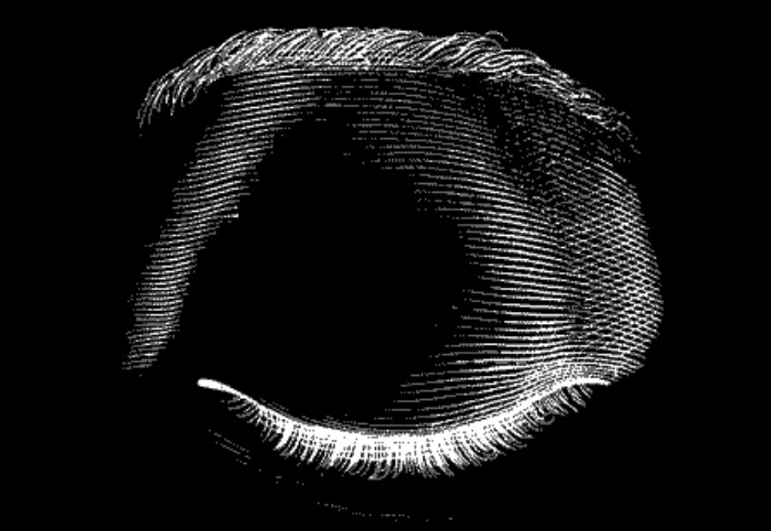
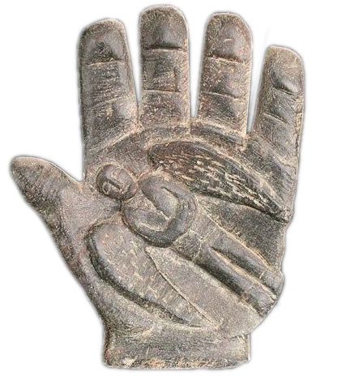
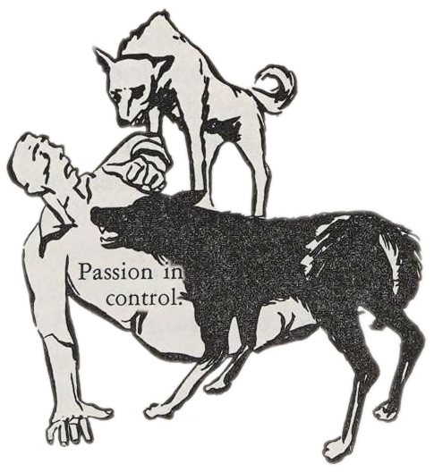
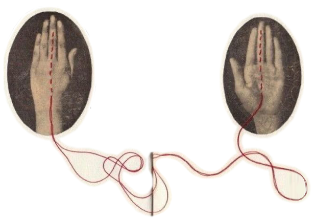
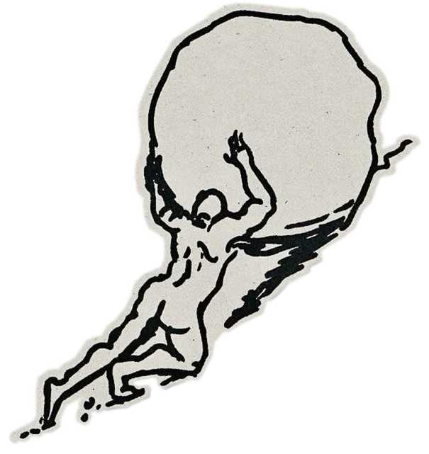
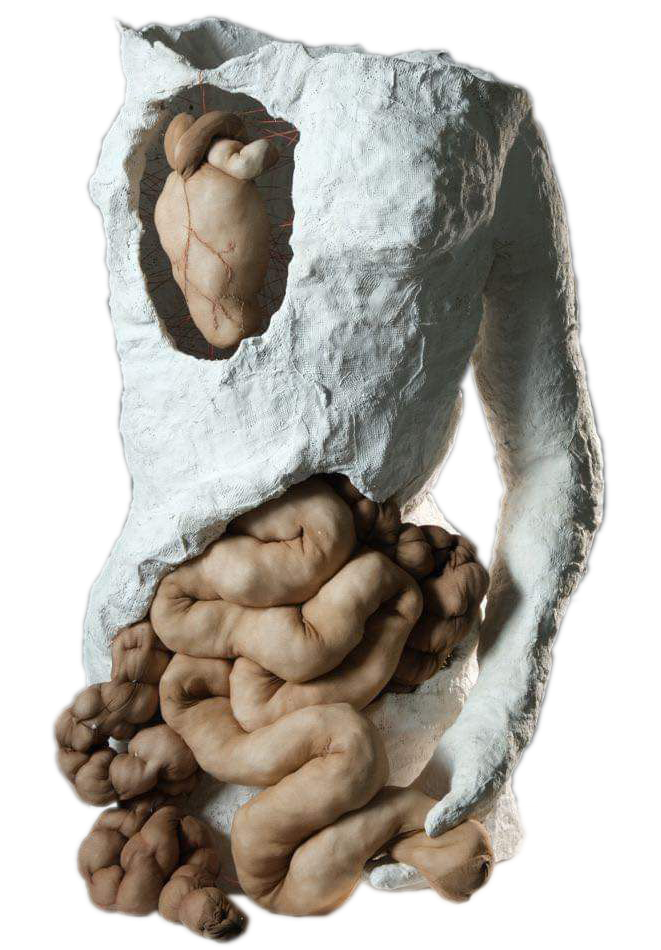
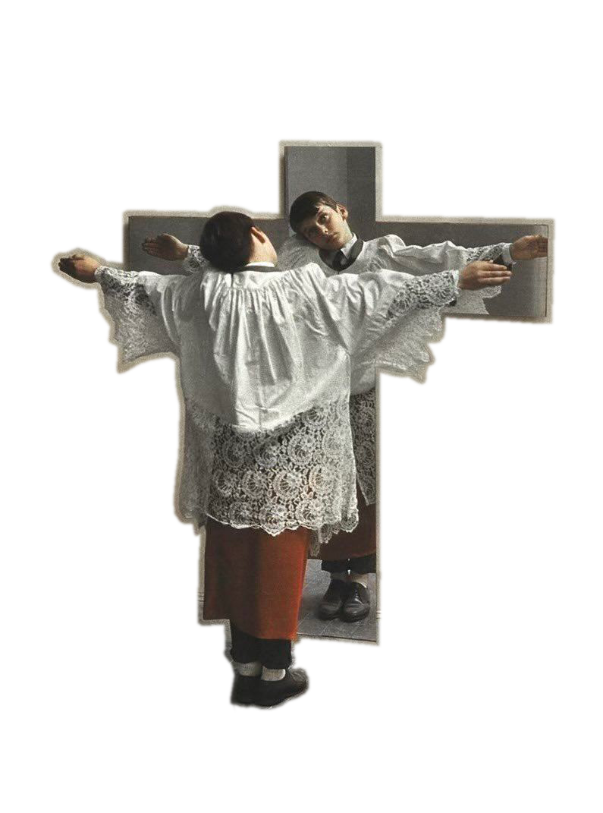

He took up the heart again, invoked the name of a planet, and undertook the vision of another of the principle organs.
Within a year he had come to the skeleton and the eyelids. The innumerable hair was perhaps the most difficult task.
I will pioneer a new way, explore unknown powers, and unfold the world the deepest mysteries of creation.
He knew that his immediate obligation was to dream. He wanted to dream a man; he wanted to dream him in minute entirely and impose him in reality.
Such the words of fate, enounced to destroy me. I felt as if my soul were grappling with a palpable enemy.
He knew that this temple was the place required for his invincible intent.
Such the words of fate, enounced to destroy me. I felt as if my soul were grappling with a palpable enemy
He knew that this temple was the place required for his invincible intent;
The creator withdraws.